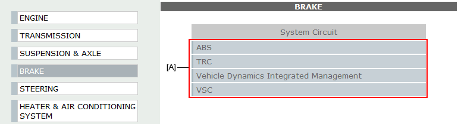
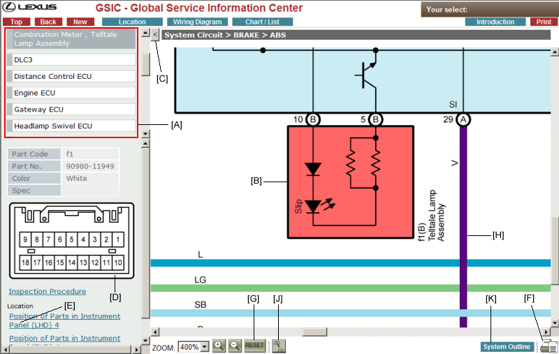
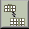
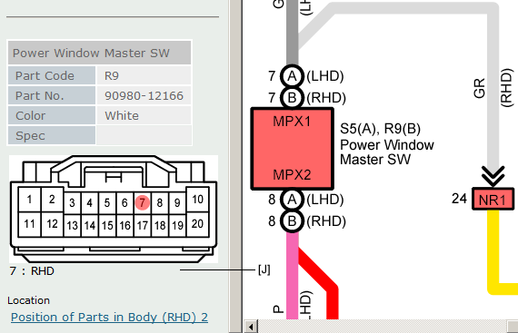
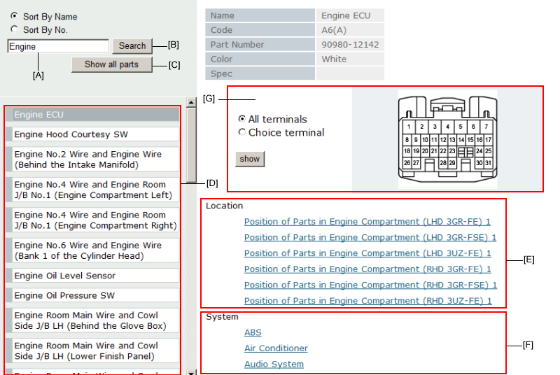
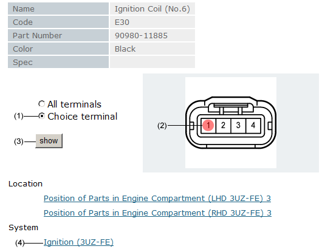
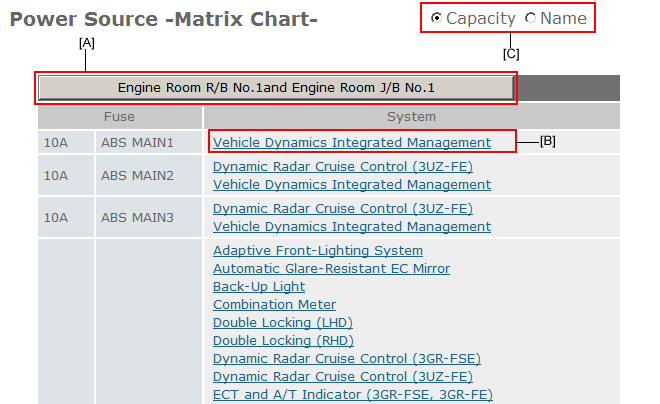

Top area of the screen is reserved for the menu selection for this web-based "EWD XML system."
Click one of the sections on the menu to access the data you want.
The first screen of this EWD XML system shows you the top menu of the System Circuit section.
| Sections | Title | Contents |
|---|---|---|
| Location |
Indicate where an ECU, relay, relay block and others are located. Indicate where a connector, ground point and others are located. |
|
| Wiring Diagram | Power Source | Show you the power source. |
| System Circuit | Show you each wiring diagram by a system. | |
| Ground Point | Show you the ground points. | |
| Overall EWD | Show you the overall wiring diagrams of a vehicle. | |
| Chart/List | Connector List | Provide the name list of all the connectors. The list allows you to view a part number, shape and some other data you want. |
| Power Source | Show you the power source. (Matrix Chart) | |
| Introduction | Introduction, Troubleshooting, Abbreviations, Glossary of terms and symbols, and Help on this EWD system are included. |
Select a proper item from the view list [A].


The name list of the parts will be displayed in the upper left of the screen if the diagram of System Circuit and Wire Routing includes symbols of the connectors.
By clicking a part name in the name list, a corresponding connector in the diagram will respond by turning into a different color of itself.
In addition to, the main screen will be adjusted by the self-automatic scrolling function for showing the parts and the connector codes properly.
The screen frame on the left side can be folded by clicking [<] button.
By clicking [>] button, the frame will be restored.
By choosing a part in [A] or [B], connector detailed data will be displayed here.1. [A] Choose a part from the name list.
2. [B] Choose one of the parts, which has the connector code, from the wiring diagram.
In System Circuit, the link let you go to the section where indicates a location of the connector shown above this link.
In Wire Routing, the link is cross-linked with System Circuit that indicates the wire connection of the connector shown in this frame.
By clicking this button, a system currently shown or a wiring routing will be displayed in the printable format (PDF).
This can be printed out using the "print" button in Acrobat Reader (external module).
[Zoom:] Display a zoom-scale in percent.
Select a zoom-scale from the drop-down list to enlarge the diagram.
Buttons
- [Zoom-In]: Zoom in a diagram.
- [Zoom-Out]: Zoom out a diagram.
- [Fit to Window]: Reset select conditions of parts and wiring and restore display magnification.
Zoom in or out according to your screen size. In System Circuit, only a vertical length can be fitted to the screen size.
Select
Click a wire harness shown in System Circuit.
The wire harness will blink.
The parts that are connected to the selected wire harness, which given the connector code or the wire-harness-and-wiring-harness connector, will also blink.
Cancel
Click the blinking wire harness.
The selected wire harness will be cancelled.
If you select the parts after selecting the wire harnesses, that session will deactivate all the selected wire harnesses.
Click the [
] button, you can view the listed all the connectors of the selected wire harness.
Pins inside the connector cavity, which are actually used for the wire connection, will be indicated with its pin number highlighted.
When the pin information is limited only for certain specification, pin number and specifications are shown at lower portion of a connector diagram.

System Outline information is shown on a separate screen. This button will not be displayed when selected system does not have system outline information.

Enter any keyword in the text box to find a connector with the name.
Run the keyword search by clicking this button.
You can view all the connector names with this button.
The Parts Name will be listed here.
You can view the details like the figure, code, part number and color of the connector you selected from the name list.
Clicking this link you can access the wiring diagram that refers to the connector you have chosen.
Clicking this link you can access the system circuit that refers to the connector you have chosen.
This function searches a system circuit which shows wiring information of certain pin number of a connector.
Follow the procedures below.
- Select Choice Terminal.
- Click pin number. The selected pin will be highlighted.
- Click [show] button.
- Link to a system circuit which shows the selected pin number information will be displayed.


By clicking this button, you can access information of the selected J/B, R/B.
By clicking this link, you can access information of the selected system circuit.
Display order of fuse will be changed.